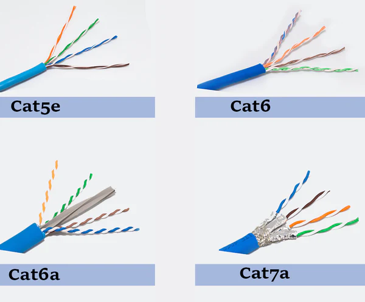

Categorias de Cabos de Par Trançado
Descubra as diferenças cruciais entre Cat5e, Cat6 e Cat6a, e como cada um se adapta às necessidades da sua rede, desde a velocidade até à distância e frequência. 
Cat5e (Category 5 Enhanced)
Esta secção detalha o cabo Cat5e, a base de muitas redes Ethernet. É uma opção robusta e económica para necessidades de rede padrão, oferecendo um desempenho fiável para o uso diário.
- Capacidade: Suporta velocidades de rede de até 1 Gigabit por segundo (Gbps).
- Frequência: Opera em frequências de até 100 MHz.
- Distância: Pode atingir 100 metros de comprimento para 1 Gbps.
- Uso Comum: Amplamente utilizado em redes domésticas e pequenas empresas, ideal para navegação na internet e transferência de ficheiros.
Cat6 (Category 6)
Aqui exploramos o cabo Cat6, um passo à frente em desempenho, especialmente para ambientes que exigem maior largura de banda ou que preveem futuras atualizações para velocidades mais elevadas em distâncias moderadas.
- Capacidade: Suporta 1 Gbps em até 100 metros e 10 Gbps em distâncias de até 55 metros.
- Frequência: Opera em frequências de até 250 MHz.
- Uso Comum: Ideal para redes corporativas que buscam melhor desempenho e menos *crosstalk* que a Cat5e.
Cat6a (Category 6 Augmented)
Esta secção foca-se no Cat6a, a solução de ponta para redes de alto desempenho. É a escolha definitiva para ambientes que necessitam de 10 Gbps de forma consistente em longas distâncias, minimizando interferências.
- Capacidade: Suporta 10 Gigabits por segundo (Gbps) em toda a sua extensão.
- Frequência: Opera em frequências de até 500 MHz.
- Distância: Pode atingir 100 metros de comprimento para 10 Gbps.
- Uso Comum: Escolha ideal para redes de alto desempenho, *data centers* e infraestruturas críticas.
Resumo Comparativo
Esta tabela resume as principais diferenças entre as categorias, permitindo uma comparação rápida para ajudar na sua decisão.
| Característica | Cat5e | Cat6 | Cat6a |
|---|---|---|---|
| Velocidade Máxima | 1 Gbps (100m) | 1 Gbps (100m) / 10 Gbps (55m) | 10 Gbps (100m) |
| Frequência | 100 MHz | 250 MHz | 500 MHz |
| Custo Relativo | Baixo | Médio | Alto |
| Uso Típico | Residencial / Pequenas Empresas | Corporativo / Futuras Atualizações | Data Centers / Alta Performance |